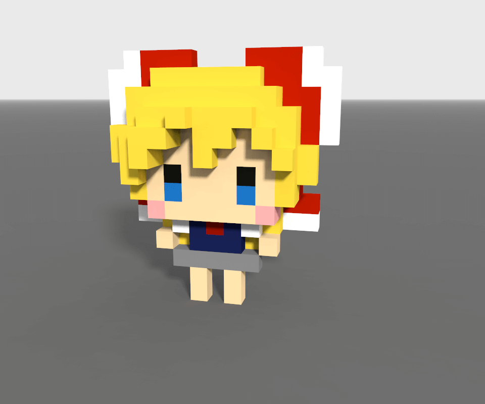
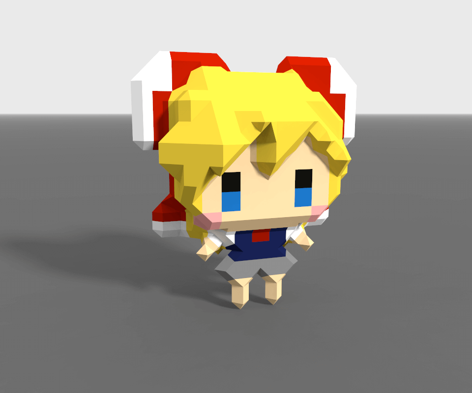

个人练习
游戏“我在七年后等着你”里的女主角，很喜欢游戏里的剧情，很感人。


第一次在最终实验，春人牺牲了自己救了葵，7年之后，葵回到老家，知道了那段历史，知道了时间跳跃技术，于是时间跳跃回去，先按下按钮牺牲自己，救了春人，然后在自己濒死，春人睡着的时候，告诉春人7年后一定要时间跳跃回来，这样两人就都知道正确按按钮的方式，都能喝到解药了.
之后也就是玩家主线，7年后，春人回到老家，在约定的牵引下，也知道了那段历史，也知道了时间跳跃技术，成功找回了记忆，并在最后关头决定时间跳跃到7年前的最终实验，这次春人和葵都喝到了解药。
再之后是EP剧情，虽然两人都喝了解药，但春人还是死了，于是葵又经过7年，又时间跳跃回来，两人又喝解药，春人又死，在不停地反复循环中，葵一直在找能让两人都活下来的方法，但不停地失败，如此循环了17711次，在最后一次回到7年前，春人和葵发生共鸣，和某一时间点的驱共享了记忆，通过驱向一木医生询问到了一木父亲所说的那个关键的日期。这个日期可以完全毁掉时间跳跃技术，也就没有后来的LMD病，但也会没有一木父亲穿越回去救下春人母亲的那场手术，50%可能性，也就没有春人的诞生。葵一开始不同意冒这样的险，但在春人的鼓励下，两人相拥在一起，发生共鸣，回到那个关键的日期，和一木父亲共享了记忆，一木父亲也毁掉了时间跳跃技术.
N年后，虽然没有LMD病这个纽带，小伙伴们还是在命运的安排下，相识相聚在一起。葵依照约定来到古井等待春人的出现，就在期待，纠结，焦虑的时候，一个熟悉的身影，出现在了她的面前......end